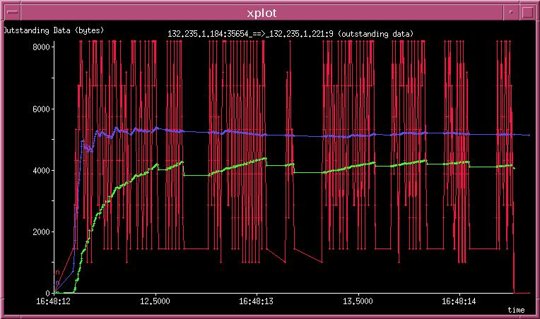

Outstanding Data Graph
Outstanding Data graphs (named X2Y_owin.xpl) are generated with the
-N option. A sample is shown in Figure 5.11.
Figure 5.11:
Outstanding Data Graph
|

|
The Y-axis represents the Outstanding Data in bytes and the X-axis
represents time. The idea behind these graphs to estimate the congestion
window at the sender. Since this cannot be determined accurately, we use the
outstanding unacknowledged data as an estimate.
- Red Line represents instantaneous outstanding data samples at
various points in the lifetime of the connection.
- Blue Line tracks the average outstanding data up to that point.
- Green Line tracks the weighted average of outstanding data
up to that point, and is as explained in the calculation of the
wavg owin field in Section 4.3.
Super-User
2003-08-29